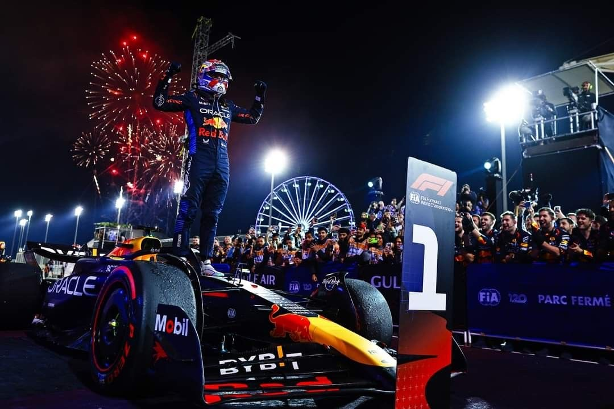
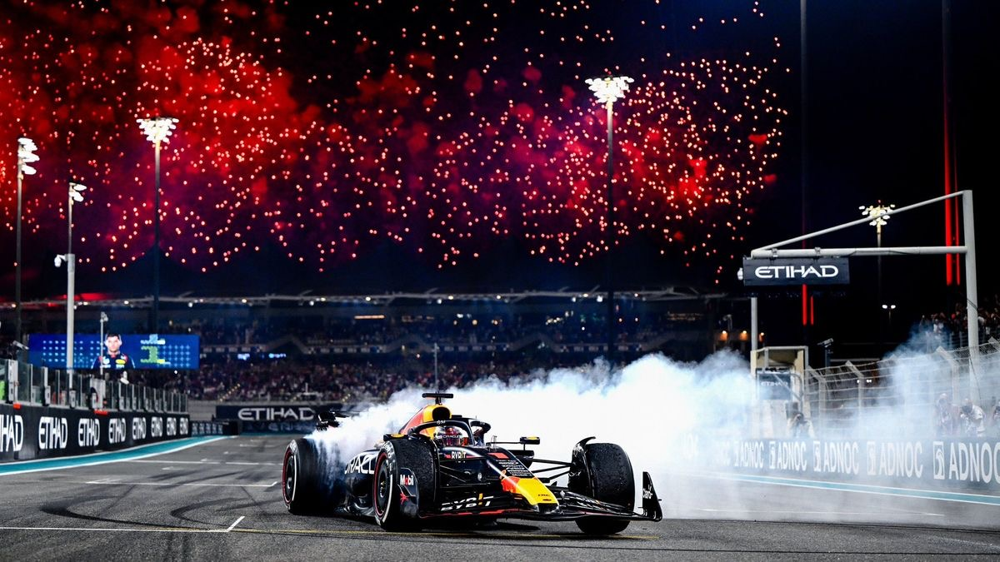

About Max Verstappen
Max Verstappen is a Formula 1 driver from the Netherlands. He made his Formula 1 debut in 2015 at only 17 years old. He became the youngest driver to start a Formula 1 race.
Max drives for Red Bull Racing and has become one of the most successful drivers of his generation. Throughout his career, he has achieved many race wins, pole positions, and World Championship titles.
I enjoy watching Max Verstappen because every race can be exciting when he is competing. His confidence, speed, and willingness to fight for a position make his races fun to watch.
Max's Driving Style
Max Verstappen is known for his aggressive and confident driving style. He is comfortable racing very closely with other drivers and often looks for opportunities to overtake.
One of the things that stands out about his driving is his ability to control the car while driving at high speeds. He is also known for strong race pace and making quick decisions during battles with other drivers.
Max can be very determined when defending his position. He often makes it difficult for another driver to pass him by choosing his braking points and positioning his car carefully.
Career Achievements
- Made his Formula 1 debut in 2015.
- Won his first Formula 1 race in 2016.
- Won four Formula 1 World Championships.
- Achieved 71 race victories.
- Achieved 133 career podiums.
Why I Like Watching Max Race
I like watching Max because his races are usually exciting. He is not afraid to compete closely with other drivers, and his aggressive style can lead to interesting battles.
I also enjoy seeing how he and his team work together during a race. Strategy, tire choices, pit stops, and the driver's decisions can all affect the final result.